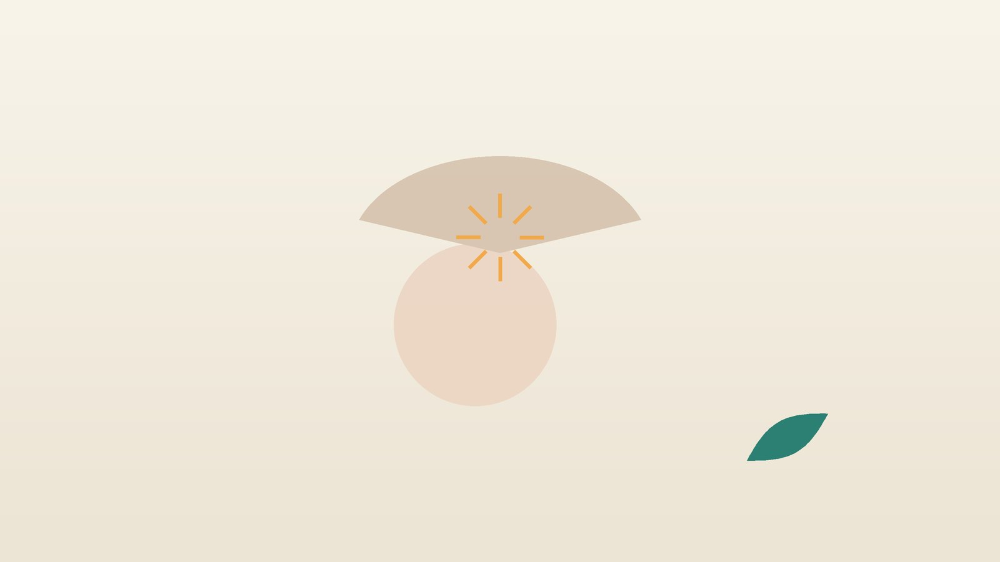

건강 칼럼 · 침구과
팔을 들 때 어깨가 걸리듯 아프다면, 어깨충돌증후군 한방 치료

나의 어깨, 이런 모습인가요?
- 팔을 옆으로 들어 올리다 중간쯤에서 '턱' 걸리며 아프고, 더 올리면 덜하다
- 선반 위 물건을 꺼내거나 머리를 감을 때 어깨 위쪽이 아프다
- 아픈 쪽으로 누우면 어깨가 욱신거려 잠을 깬다
- 통증이 어깨 바깥에서 팔 위쪽으로 내려온다
- 다른 사람이 팔을 들어 주면 끝까지 올라간다
- 수영, 배드민턴, 머리 위로 하는 작업을 즐겨 하거나 오래 했다
이 체크리스트는 진단 도구가 아니라 상담이 필요한지 가늠해 보는 참고용입니다.
어깨충돌증후군은 왜 생기나요?
어깨를 들어 올릴 때 위팔뼈 머리는 어깨뼈 지붕인 견봉 아래 좁은 틈을 지나가고, 그 틈에는 회전근개 힘줄과 마찰을 줄여 주는 점액낭이 있습니다. 1972년 니어(Neer)가 이 공간에서 힘줄이 끼이는 현상을 '충돌'로 설명한 이후 이 이름이 널리 쓰였습니다. 머리 위로 팔을 쓰는 반복 동작, 굽은 등과 앞으로 말린 어깨, 날개뼈를 잡아 주는 근육의 약화가 이 공간을 좁혀 힘줄을 자극합니다.
최근에는 뼈가 힘줄을 찍는 단순한 기계적 문제보다 힘줄 자체의 과부하와 근육 조절 문제가 더 크다고 보아 '견봉하 통증 증후군'이라는 이름도 함께 씁니다. 영국에서 진행된 CSAW 연구(2018)에서는 견봉 일부를 깎는 관절경 감압술이 가짜 수술보다 뚜렷이 낫지 않았고, 이를 바탕으로 2019년 BMJ 진료지침은 이 수술을 하지 말 것을 강하게 권고했습니다. 그래서 어깨와 날개뼈 근육을 단계적으로 기르는 운동 치료가 치료의 중심입니다.
다른 진료가 먼저 필요한 신호
- 넘어지거나 무거운 것을 들다 '뚝' 소리와 함께 갑자기 팔을 들 수 없게 됐다 (회전근개 파열·탈구 확인)
- 힘이 빠져 스스로는 팔을 못 드는데, 남이 들어 주면 올라간다 (파열 의심, 초음파·MRI)
- 남이 들어 줘도 팔이 굳어 올라가지 않고 바깥으로 돌리기가 특히 힘들다 (오십견)
- 왼쪽 어깨와 가슴이 함께 아프고 숨이 차거나 식은땀이 난다 (심장 질환, 응급)
- 어깨가 빨갛고 뜨겁게 붓고 열이 난다
- 목을 움직일 때 팔이 저리고 손까지 찌릿하다 (목 디스크 확인)
어깨 통증이 계속되거나 힘이 빠지는 느낌이 있다면 정형외과에서 초음파나 MRI로 힘줄이 찢어졌는지, 석회가 생겼는지 확인하는 것이 좋습니다. 회전근개 파열은 크기와 나이에 따라 치료 방향이 달라집니다.
한의학은 어깨충돌증후군을 어떻게 보나요?
한의학에서는 어깨와 팔이 아프고 들어 올리기 힘든 상태를 견비통(肩臂痛)이라 불렀습니다. 어깨 바깥과 앞쪽은 수양명대장경, 뒤쪽은 수태양소장경, 바깥 옆은 수소양삼초경의 경근이 지나는 자리라, 팔을 드는 어느 방향에서 아픈지에 따라 막힌 경락을 나눠 봅니다.
반복해서 팔을 쓰는 과로가 근(筋)을 지치게 하고, 그 위에 찬 바람과 습기가 들어오거나 굳은 자세로 기혈이 정체되면 통증이 자리 잡는다고 해석합니다. 나이가 들어 힘줄을 기르는 기혈이 부족해지면 작은 자극에도 쉽게 아프고 회복이 늦어지므로, 바깥의 막힘을 푸는 것과 안의 바탕을 채우는 것을 균형 있게 다룹니다.
나의 어깨는 어떤 유형일까?
1. 노손 어혈(勞損瘀血) 많이 써서 막힌 유형
- 이런 분에게 많아요
- 수영·테니스를 즐기거나 팔을 들고 일하는 분
- 나타나는 모습
- 특정 높이에서 날카롭게 걸리고 쓰고 나면 욱신거린다
- 함께 오는 몸의 신호
- 어깨 앞 압통, 밤에 아픈 쪽으로 눕기 힘듦
- 진찰에서 보이는 모습
- 국소 압통이 뚜렷하고 혀가 어두움
- 치료 방향
- 막힌 혈을 풀어 힘줄의 염증을 가라앉히는 방향 (신통축어탕 계열)
- 오늘부터 해 볼 것
- 통증이 걸리는 높이 위로는 당분간 팔을 올리지 마세요.
2. 풍한습(風寒濕) 차고 무겁게 쑤시는 유형
- 이런 분에게 많아요
- 에어컨 아래서 일하거나 찬 바람을 맞으면 아픈 분
- 나타나는 모습
- 어깨가 시리고 묵직하며 흐린 날, 밤에 더 쑤신다
- 함께 오는 몸의 신호
- 목·등 뻣뻣함, 몸이 무거움
- 진찰에서 보이는 모습
- 설태가 희고 맥이 긴장됨
- 치료 방향
- 찬 기운과 습을 흩어 경락을 여는 방향 (견비탕 계열)
- 오늘부터 해 볼 것
- 잘 때 어깨가 이불 밖으로 나오지 않게 덮으세요.
3. 기혈허(氣血虛) 회복이 더딘 유형
- 이런 분에게 많아요
- 50대 이후, 피로가 쌓이고 근력이 약해진 분
- 나타나는 모습
- 크게 무리하지 않아도 아프고 잘 낫지 않는다
- 함께 오는 몸의 신호
- 팔 힘 빠짐, 쉽게 지침, 손발 저림
- 진찰에서 보이는 모습
- 혀색이 옅고 맥이 힘없이 가늚
- 치료 방향
- 기혈을 채워 힘줄과 근육의 회복을 돕는 방향 (팔진탕 계열)
- 오늘부터 해 볼 것
- 가벼운 밴드 운동부터 하루 10분 시작해 보세요.
한의원에서는 어떻게 진찰하나요?
- 통증 구간 확인: 팔을 옆으로 들 때 60~120도 사이에서 아프다가 그 위에서 덜해지는 '통증 활 구간'이 있는지 봅니다.
- 충돌 검사: 니어 검사와 호킨스 검사처럼 팔을 특정 방향으로 들거나 돌려 통증이 재현되는지 확인합니다.
- 파열·오십견 구분: 스스로 드는 범위와 남이 들어 줄 때의 범위, 버티는 힘을 비교하고 필요하면 초음파·MRI를 권합니다.
- 자세와 날개뼈: 굽은 등, 말린 어깨, 팔을 들 때 날개뼈가 들뜨는지와 함께 설진·맥진으로 유형을 판단합니다.
침·약침·추나·한약 치료는 어떻게 하나요?
1. 침 치료
- 견우(肩髃): 팔을 옆으로 들었을 때 어깨 끝 앞쪽에 생기는 오목한 곳. 어깨 앞·바깥 통증의 중심 혈입니다.
- 견료(肩髎): 팔을 들었을 때 견우 뒤쪽에 생기는 오목한 곳. 어깨 바깥 뒤쪽 통증에 씁니다.
- 견정(肩貞): 팔을 내렸을 때 겨드랑이 뒤 주름 끝에서 손가락 한 마디 위. 어깨 뒤쪽 근육을 풉니다.
- 천종(天宗): 날개뼈 가운데 오목한 곳. 회전근개 뒤쪽 근육의 긴장을 덜어 줍니다.
- 조구(條口): 무릎 바깥 아래 정강이뼈 옆, 무릎과 발목의 한가운데 높이. 먼 자리로 놓고 어깨를 천천히 움직이게 합니다.
2. 약침과 추나·온열 요법
어깨 주변의 압통점과 날개뼈 근육에 약침을 적용해 염증과 긴장을 가라앉힙니다. 굽은 등과 말린 어깨가 공간을 좁히는 경우 추나 요법을 시행하며, 진찰 후 적용 여부를 상담합니다. 시리고 뻣뻣한 어깨에는 온열 요법을 더합니다.
3. 운동 치료 지도
통증이 줄어드는 만큼 날개뼈를 모으는 운동, 고무 밴드로 팔을 바깥으로 돌리는 운동, 벽 짚고 밀기처럼 어깨를 안정시키는 운동을 단계적으로 안내합니다. 침과 약침은 운동을 할 수 있을 만큼 통증을 낮추는 역할입니다.
4. 한약
밤에 쑤시는 통증이 심하거나 회복이 더딘 분은 유형에 맞는 탕약을 함께 씁니다. 혈액을 묽게 하는 약이나 당뇨약을 드신다면 알려 주세요. 확인해서 처방합니다.
치료는 어떤 순서로 진행되나요?
- 첫 진료 충돌 검사와 파열·오십견 구분을 하고, 필요하면 초음파·MRI를 권합니다.
- 1~3주 주 2회 안팎의 침·약침으로 통증과 밤 통증을 줄이고, 아픈 높이를 피하는 법을 익힙니다.
- 3~8주 날개뼈와 회전근개 운동을 단계적으로 늘리고 자세를 교정합니다.
- 복귀 운동이나 작업을 천천히 다시 시작하며 통증 없이 팔을 쓰는지 확인합니다.
힘줄이 적응하는 데는 시간이 걸려, 운동 치료는 보통 몇 주에서 몇 달 꾸준히 이어 가야 효과가 나타납니다.
어깨를 지키는 생활 관리
- 아픈 높이 피하기: 통증이 시작되는 높이 위로 반복해서 팔을 올리지 말고, 높은 선반 물건은 발판을 씁니다.
- 자세: 모니터를 눈높이에 두고, 가슴을 펴 날개뼈를 살짝 모은 자세로 앉습니다.
- 잠자는 자세: 아픈 쪽을 아래로 두지 말고, 바로 누울 때는 팔 아래 얇은 베개를 받칩니다.
- 운동은 꾸준히: 하루 10~15분, 통증이 가볍게 느껴지는 정도까지만 밴드 운동을 합니다.
- 집에서 하는 지압: 반대쪽 손으로 날개뼈 가운데 천종 자리를 지그시 눌러 풀어 줍니다.
다른 진료가 함께 필요한 경우
- 힘이 빠져 팔을 들 수 없다면 초음파나 MRI로 회전근개 파열을 확인하세요.
- 석회가 생겨 갑자기 극심하게 아프면 정형외과에서 석회 치료를 상담할 수 있습니다.
- 몇 달간 운동 치료를 해도 나아지지 않으면 정형외과에서 주사 치료 등을 상담하세요.
- 당뇨가 있는 분은 어깨가 굳는 오십견이 함께 오기 쉬워 혈당 관리도 중요합니다. 당뇨약은 임의로 끊지 마세요.
자주 묻는 질문 Q&A
- Q1. 오십견과 어깨충돌증후군은 어떻게 다른가요?
- 오십견은 관절막이 굳어 남이 들어 줘도 팔이 올라가지 않지만, 충돌증후군은 남이 들어 주면 올라가는 경우가 많습니다.
- Q2. 회전근개가 찢어졌는지 어떻게 알 수 있나요?
- 스스로 팔을 들거나 버티는 힘이 약하면 의심하며, 초음파나 MRI로 확인합니다.
- Q3. 수술을 꼭 해야 하나요?
- 힘줄이 찢어지지 않은 충돌증후군은 운동 치료가 먼저입니다. 감압 수술은 가짜 수술보다 낫지 않았다는 연구가 있습니다.
- Q4. 아픈데 운동을 해도 되나요?
- 통증이 가볍게 느껴지는 범위에서는 운동이 회복에 도움이 됩니다. 날카롭게 아프면 강도를 낮춥니다.
- Q5. 수영은 계속해도 되나요?
- 통증이 심한 동안은 자유형·접영처럼 팔을 크게 돌리는 영법을 쉬고, 좋아지면 천천히 다시 시작하세요.
- Q6. 밤에 어깨가 더 아파요.
- 눕는 자세에 따라 힘줄이 눌리기 때문입니다. 아픈 쪽으로 눕지 말고 팔 아래에 베개를 받쳐 보세요.
- Q7. 주사를 맞았는데 한방 치료를 같이 받아도 되나요?
- 함께 받을 수 있습니다. 주사 날짜와 종류를 알려 주시면 시술 부위와 시기를 조절합니다.
- Q8. 치료 기간은 얼마나 되나요?
- 통증은 몇 주 안에 줄어드는 경우가 많지만, 근육을 기르는 운동은 두세 달 이어 가는 것이 좋습니다.
참고 자료
- Neer CS 2nd. Anterior acromioplasty for the chronic impingement syndrome in the shoulder: a preliminary report. Journal of Bone and Joint Surgery (American), 1972
- Beard DJ, et al. Arthroscopic subacromial decompression for subacromial shoulder pain (CSAW): a multicentre, pragmatic, parallel group, placebo-controlled, three-group, randomised surgical trial. Lancet, 2018
- Vandvik PO, et al. Subacromial decompression surgery for adults with shoulder pain: a clinical practice guideline. BMJ, 2019
- 질병관리청 국가건강정보포털 — 원문
※ 이 글은 일반적인 건강 정보이며, 개인의 상태에 따라 치료 방법과 결과는 다를 수 있습니다. 정확한 진단과 치료는 진료를 통해 결정됩니다. 침·약침 시술 후 드물게 멍, 통증 등이 생길 수 있습니다.